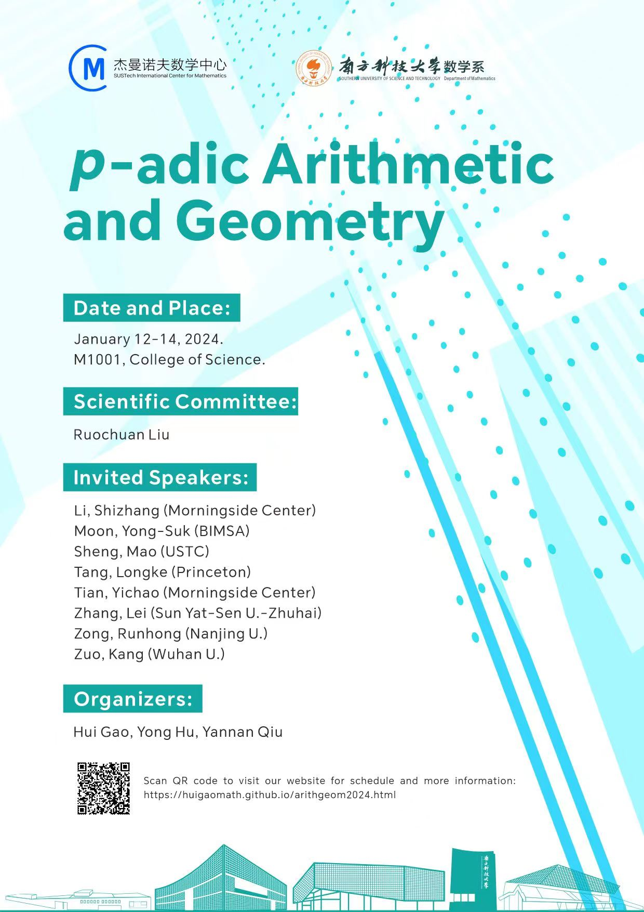

p-adic Arithmetic and Geometry (Jan. 2024)
Scientific Committee: Ruochuan Liu
--------------------------------
Time: Jan 12-14, 2024.
(Starts on Jan 12 (Friday) morning; ends Jan 14 (Sunday), before noon time).
Place: SUSTech, Shenzhen
Organizers: Hui Gao, Yong Hu, Yannan Qiu
Hosted by Shenzhen International Center for Mathematics, and cohosted by
Dept of Math at SUSTech.
The conference is funded by NSFC and generous support from Shenzhen International Center for Mathematics.
--------------------------------
Handbook: Schedule, Title and Abstracts (pdf ver. 2024.1.11)
Poster (low resolution version) and Group photo. click to enlarge.

 Speakers:
Speakers:
Li, Shizhang (Morningside Center)
Moon, Yong-Suk (BIMSA)
Sheng, Mao (USTC)
Tang, Longke (Princeton)
Tian, Yichao (Morningside Center)
Zhang, Lei (Sun Yat-Sen U.-Zhuhai)
Zong, Runhong (Nanjing U.)
Zuo, Kang (Wuhan U.)
--------------------------------
Registration:
Deadline for students and postdocs is Dec 20, 2023.
(SUSTech faculty/students do not need to register)
Kdocs registration Link
we strongly encourage you to use your own (or your advisor/mentor's) funding for travel.
In general, we can cover hotel costs for you.
For professors who would like to register after Dec 20, please contact Hui Gao directly.
We apologize in advance if we could not accommodate all students due to possible limitation of resources.
--------------------------------